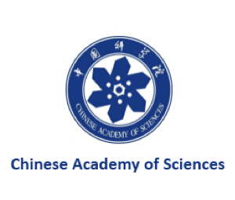

{% for post in site.posts %}
{% if post.name == 'Xiangtao Kong' %}
[September 2019] Welcome Xiangtao Kong to join our group!
{% endif %}
{% endfor %}
{% for post in site.posts %}
{% if post.title == 'RankSRGAN: Generative Adversarial Networks with Ranker for Image Super-Resolution' %}
[July 2019] One paper is selected as oral presentation in ICCV 2019! Check our paper for more details.
{% endif %}
{% endfor %}
[July 2019] Our group's establishment has done in a group meeting at MMlab, CUHK! Check group activities for more details.
{% for post in site.posts %}
{% if post.name == 'Xiangyu Chen' %}
[June 2019] Welcome Xiangyu Chen to join our group!
{% endif %}
{% endfor %}
{% for post in site.posts %}
{% if post.title == 'EDVR: Video Restoration With Enhanced Deformable Convolutional Networks' %}
[April 2019] Our HelloSR team won the champions in all four tracks in the NTIRE19 video restoration and enhancement challenges! Congrats to Xintao Wang and the team! Check our project for more details.
{% endif %}
{% endfor %}
{% for post in site.posts %}
{% if post.title == 'Modulating Image Restoration With Continual Levels via Adaptive Feature Modification Layers' %}
[July 2019] One paper is selected as oral presentation in ICCV 2019! Check our paper for more details.
{% endif %}
{% endfor %}
[March 2019] Our five papers accepted in CVPR 2019!
{% for post in site.posts %}
{% if post.name == 'Liangbin Xie' %}
[June 2019] Welcome Liangbin Xie to join our group!
{% endif %}
{% endfor %}
{% for post in site.posts %}
{% if post.name == 'Yuanjun Chai' %}
[June 2019] Welcome Yuanjun Chai to join our group!
{% endif %}
{% endfor %}
About Us
X-Pixel(/eks-ˈpɪksəl/) group means we discover the principle of images cross pixels. We focus on low-level vision problems, including image/video super-resolution, denoising, deblurring, etc. Our mission is to facilitate human beings to get clearer vision with AI. X-Pixel Group applies achievements in real scenarios.
X-Pixel is supported by CUHK, NTU, SIAT and SenseTime.
Latest Publications
{% for post in site.posts limit:3 %}
{% if post.type == 'paper' %}

Collaboration

SIAT
SIAT aims to enhance the innovative capacity of the equipment manufacturing and service industries in the Guangdong-Hong Kong region, promote the development of emerging industries possessing their own proprietary intellectual property, and become a world-class industrial research institute.
CAS
The Chinese Academy of Sciences is the linchpin of China’s drive to explore and harness high technology and the natural sciences for the benefit of China and the world. Comprising a comprehensive research and development network, a merit-based learned society and a system of higher education, CAS brings together scientists and engineers from China and around the world to address both theoretical and applied problems using world-class scientific and management approaches.

CUHK
The CUHK Multimedia Lab (MMLab) is one of the pioneering institutes on deep learning. In GPU Technology Conference (GTC) 2016, a world-wide technology summit, MMlab is recognized as one of the top ten AI pioneers, and listed together with top research groups in the world (e.g. MIT, Stanford, Berkeley, and Univ. of Toronto). Today, it remains one of the most active research labs in computer vision and deep learning, publishing over 40 papers on top conferences (CVPR/ICCV/ECCV/NIPS) every year.

SenseTime Inc.
SenseTime is a global company focused on developing innovative AI technologies that positively contribute to economies, society and humanity. With roots in the academic world, SenseTime invest in fundamental research to further understanding and advance the state of art in AI technology. SenseTime is a global team of talented individuals with over half dedicated to research and development activities. This has made it a leading global AI algorithm provider and one of the most prolific contributors of related papers in the research community.

NTU
The Nanyang Technological University is the second oldest public autonomous research university in Singapore. With a population of 33,500 students and 10,000 faculty and staff, NTU is the second largest university in Singapore.